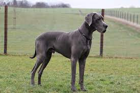

Overview
he easygoing Great Dane, the mighty "Apollo of Dogs," is a total joy to live with, but owning a dog of such imposing size, weight, and strength is a commitment not to be entered into lightly. This breed is indeed great, but not a Dane. As tall as 32 inches at the shoulder, Danes tower over most other dogs and when standing on their hind legs, they are taller than most people. These powerful giants are the picture of elegance and balance, with the smooth and easy stride of born noblemen. The coat comes in different colors and patterns, perhaps the best-known being the black-and-white patchwork pattern known as "harlequin." Despite their sweet nature, Danes are alert home guardians. Just the sight of these gentle giants is usually enough to make intruders think twice. But those foolish enough to mistake the breed's friendliness for softness will meet a powerful foe of true courage and spirit. Patient with kids, Danes are people pleasers who make friends easily.large-sized dog breed originating from Germany. The Great Dane descends from hunting dogs from the Middle Ages used to hunt bear, wild boar, and deer. They were also used as guardians of German nobility. It is one of the two largest dog breeds in the world, along with the Irish Wolfhound.Great Danes are considered gentle giants. They are moderately playful, affectionate and good with children. They will guard their home. Great Danes generally get along with other animals, particularly if raised with them, but some individuals in the breed can be aggressive with dogs they do not know.
Characteristics
- moderately playful, affectionate and good with children
- They will guard their home.
- Danes have a fairly low energy level.
- Great Danes are kind and enjoy family life.
Care
Great Danes are the tallest of the working breeds, standing at 28-32” in height. When they stand on their hind legs, they can be taller than most people. They are also very heavy, weighing 120-160 pounds on average. They come in many colors, including black, blue, fawn, harlequin, and merle. Because of their large size, they unfortunately have a shorter life expectancy. The average Great Dane lives only 7 to 10 years. Great Danes have large floppy ears, a big blocky head, a deep chest, long limbs, and a long tail. A typical Great Dane does not shed much in relative terms—but because the breed is so large, that’s still a lot of hair in an absolute sense. So, if you have a Great Dane, get your vacuum ready and be prepared to use it even more during shedding season. You’ll only have to bathe your Great Dane once in a while; if they start to smell, that could be a hint that it’s time. But, as with many other Great Dane-related matters, size is a complicating factor. You’ll need a tub or some other place large enough to wash your big best friend. Have a plan before you bring one home.